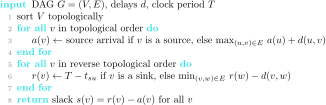
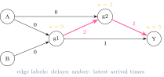

), the required times backward (
), the required times backward ( ), and reports the slack
), and reports the slack  of every node; negative slack marks violating paths, in time linear in the circuit size.
of every node; negative slack marks violating paths, in time linear in the circuit size.Method
Separation of concerns: functionality is verified by simulation, timing by STA, independently of input values (static). Conditions: synchronous design, combinational logic without loops between registers, known delays.
The circuit becomes a timing graph: nodes are pins, edges carry delays. Sources are primary inputs and register outputs (arrival ), sinks are primary outputs and register inputs (required ).
- Arrival time (latest): , in topological order.
- Required time: , in reverse topological order.
- Slack: . The critical path is the chain of nodes with minimum slack. For hold, the same with earliest arrival (min) and earliest required times.
Algorithm

Each edge is visited twice: .
Picture

The critical path (magenta) sets the arrival time 5 at the output.
Intuition
STA asks "how late can each signal possibly be?" once per node, not once per input pattern — which is why it scales to chips that simulation could never cover.
Pitfall
STA is pessimistic: it counts topological paths that no input can actually sensitise. Those false paths can make a correct circuit look too slow.